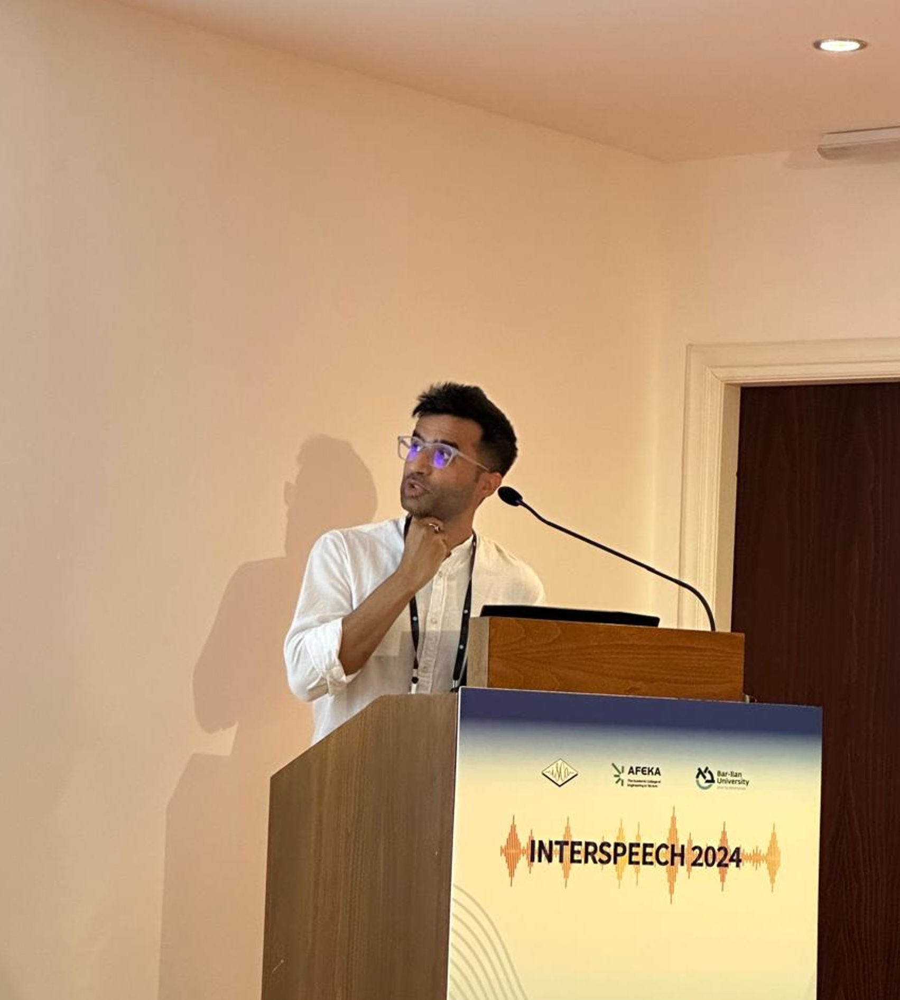

|
Sarthak Yadav
I am an MSc (Research) student at the School of Computing Science, University of Glasgow.
Previously, I worked as the Lead Research Engineer at Staqu Technologies, a premier Indian AI startup, where I led the design and development of several large scale mission-critical intelligent systems, spanning computer vision (such as violence recognition and scalable object detection), spoken language understanding (most prominently speaker biometrics and ASR) and neural machine translation for low-resource languages.
I also architected and co-developed Staqu's scalable inference system (Shoutout to the Backend Team @ Staqu!), handling several projects with over 10M inferences per day.
Before that I worked on several problems on structured data during my bachelors, most prominently Computer Virology, with Dr. Ankur Singh Bist and Dr. Manoj Kumar Gupta.
Email |
CV |
Google Scholar |
LinkedIn |
GitHub |
Kaggle
|

|
|
Research Interests
I am interested in the interpretability of raw waveform based audio processing deep neural networks (DNNs) in the discrete-time audio input space, specifically the dynamics of how self-supervised representations differ from supervised ones. I believe that an amalgamation of visual and aural means of interpretation would work best for interpreting such models.
|
|
|
Frequency and Temporal Convolutional Attention for Text-Independent Speaker Recognition
Sarthak Yadav,
Atul Rai
International Conference on Acoustics, Speech and Signal Processing (ICASSP), 2020
Abstract /
BibTex
Majority of the recent approaches for text-independent speaker recognition apply attention or similar techniques for aggregation of frame-level feature descriptors generated by a deep neural network (DNN) front-end. In this paper, we propose methods of convolutional attention for independently modelling temporal and frequency information in a convolutional neural network (CNN) based front-end. Our system utilizes convolutional block attention modules (CBAMs) [1] appropriately modified to accommodate spectrogram inputs. The proposed CNN front-end fitted with the proposed convolutional attention modules outperform the no-attention and spatial-CBAM baselines by a significant margin on the VoxCeleb [2], [3] speaker verification benchmark. Our best model achieves an equal error rate of 2.031% on the VoxCeleb1 test set, which is a considerable improvement over comparable state of the art results. For a more thorough assessment of the effects of frequency and temporal attention in real-world conditions, we conduct ablation experiments by randomly dropping frequency bins and temporal frames from the input spectrograms, concluding that instead of modelling either of the entities, simultaneously modelling temporal and frequency attention translates to better real-world performance.
@INPROCEEDINGS{9054440,
author={Yadav, Sarthak and Rai, Atul},
booktitle={ICASSP 2020 - 2020 IEEE International Conference on Acoustics, Speech and Signal Processing (ICASSP)},
title={Frequency and Temporal Convolutional Attention for Text-Independent Speaker Recognition},
year={2020},
volume={},
number={},
pages={6794-6798},
doi={10.1109/ICASSP40776.2020.9054440}}
|
|
|
Learning Discriminative Features for Speaker Identification and Verification
Sarthak Yadav,
Atul Rai
INTERSPEECH, 2018
Abstract /
BibTex
The success of any Text Independent Speaker Identification and/or Verification system relies upon the system’s capability to learn discriminative features.
In this paper we propose a Convolutional Neural Network (CNN) Architecture based on the popular Very Deep VGG [1] CNNs, with key modifications to accommodate variable length spectrogram inputs, reduce the model disk space requirements and reduce the number of parameters, resulting in significant reduction in training times. We also propose a unified deep learning system for both Text-Independent Speaker Recognition and Speaker Verification, by training the proposed network architecture under the joint supervision of Softmax loss and Center loss [2] to obtain highly discriminative deep features that are suited for both Speaker Identification and Verification Tasks.
We use the recently released VoxCeleb dataset [3], which contains hundreds of thousands of real world utterances of over 1200 celebrities belonging to various ethnicities, for benchmarking our approach. Our best CNN model achieved a Top1 accuracy of 84.6%, a 4% absolute improvement over VoxCeleb’s approach, whereas training in conjunction with Center Loss improved the Top-1 accuracy to 89.5%, a 9% absolute improvement over Voxceleb’s approach.
@inproceedings{yadav2018learning,
title="Learning Discriminative Features for Speaker Identification and Verification.",
author="Sarthak {Yadav} and Atul {Rai}",
booktitle="Interspeech 2018",
pages="2237--2241",
year="2018"
}
|
|
|
Prediction of Ubiquitination Sites Using UbiNets
Sarthak Yadav,
Manoj Kumar Gupta,
Ankur Singh Bist
Advances in Fuzzy Systems, 2018
Abstract /
BibTex
Ubiquitination controls the activity of various proteins and belongs to posttranslational modification. Various machine learning techniques are taken for prediction of ubiquitination sites in protein sequences. The paper proposes a new MLP architecture, named UbiNets, which is based on Densely Connected Convolutional Neural Networks (DenseNet). Computational machine learning techniques, such as Random Forest Classifier, Gradient Boosting Machines, and Multilayer Perceptrons (MLP), are taken for analysis. The main target of this paper is to explore the significance of deep learning techniques for the prediction of ubiquitination sites in protein sequences. Furthermore, the results obtained show that the newly proposed model provides significant accuracy. Satisfactory experimental results show the efficiency of proposed method for the prediction of ubiquitination sites in protein sequences. Further, it has been recommended that this method can be used to sort out real time problems in concerned domain
@article{yadav2018prediction,
title={Prediction of ubiquitination sites using UbiNets},
author={Yadav, Sarthak and Gupta, Manoj and Bist, Ankur Singh},
journal={Advances in Fuzzy Systems},
volume={2018},
publisher={Hindawi}
}
|
|